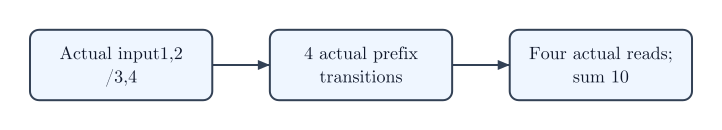
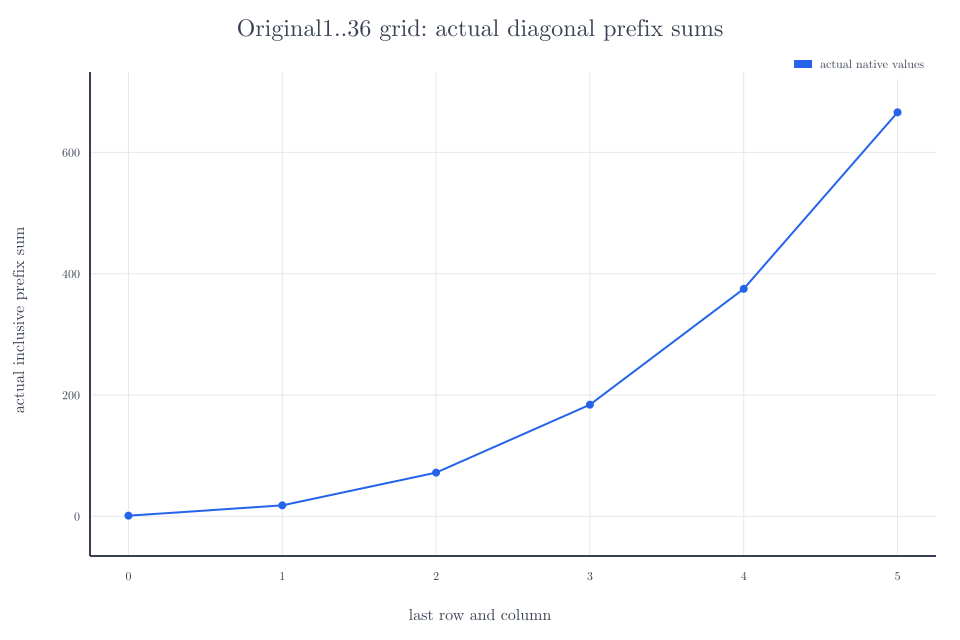
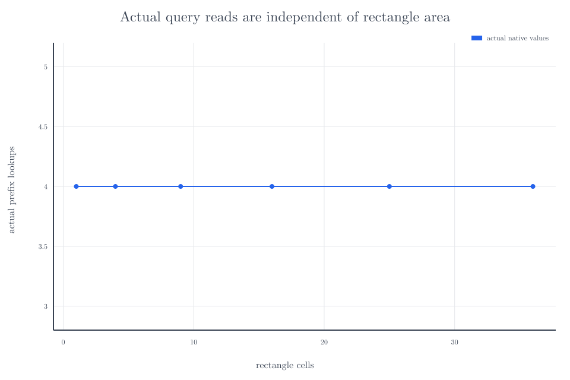
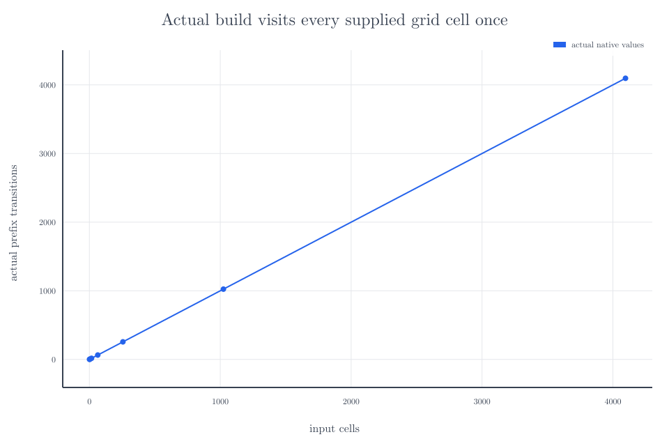

Summed-area tables: actual prefix cells and four-lookup rectangles
Abstract
An integral image pays one grid build to answer inclusive rectangle sums with four prefix reads. We retain the original6 by6 grid and expose actual recurrence operands and query corners.
Mechanism and mathematical scope
With a zero border, S(r+1,c+1)=A(r,c)+S(r,c+1)+S(r+1,c)-S(r,c). An inclusive rectangle is S(r1+1,c1+1)-S(r0,c1+1)-S(r1+1,c0)+S(r0,c0). Construction is linear in grid cells; a checked rectangle query performs exactly four prefix lookups regardless of area. In double, cancellation/rounding can differ from direct summation, so exact equality is asserted only for the small integer fixture, not arbitrary high-dynamic-range data.
A tiny actual producing history
The table and native concept diagram read the same producing execution. Every block below is a complete editable C++ program.
#include <dm/dm.hpp>
int main() {
namespace a = dm::algorithms;
namespace g = dm::graphics;
std::filesystem::create_directories("build");
a::SummedAreaTable r({{1, 2}, {3, 4}}, {.capture = true});
std::print("| actual row,col | input | above | left | diagonal | output prefix |\n| --- | ---: | ---: | " "---: | ---: | ---: |\n");
for (const auto &s : r.steps())
std::print("| {},{} | {} | {} | {} | {} | {} |\n", s.row, s.col,
s.input, s.above, s.left, s.diagonal, s.value);
auto q = r.query(0, 0, 1, 1);
std::print("Actual query corners {},{},{},{}; sum {}; lookups {}.\n",
q.bottom_right, q.above, q.left, q.diagonal, q.value, q.lookups);
g::Diagram concept_diagram(48, 1100);
concept_diagram.node("n0", {0, 0}, "Actual input1,2 /3,4");
concept_diagram.node("n1", {5, 0},
std::format("{} actual prefix transitions",
r.steps().size()));
concept_diagram.node("n2", {10, 0},
std::format("Four actual reads; sum {}", q.value));
concept_diagram.edge("n0", "n1").edge("n1", "n2");
concept_diagram.save_svg("build/summed_area_table_tiny.svg");
}| actual row,col | input | above | left | diagonal | output prefix |
|---|---|---|---|---|---|
| 0,0 | 1 | 0 | 0 | 0 | 1 |
| 0,1 | 2 | 0 | 1 | 0 | 3 |
| 1,0 | 3 | 1 | 0 | 0 | 4 |
| 1,1 | 4 | 3 | 4 | 1 | 10 |
Actual query corners 10,0,0,0; sum 10; lookups 4.

The retained original experiment
#include <dm/dm.hpp>
int main() {
namespace a = dm::algorithms;
namespace g = dm::graphics;
std::filesystem::create_directories("build");
auto grid = a::summed_area_example_grid();
a::SummedAreaTable sat(grid);
std::print("| original inclusive rectangle | actual sum | actual mean | prefix reads |\n| --- | ---: | " "---: | ---: |\n");
for (const auto &q : std::vector<std::array<std::size_t, 4>>{{0, 0, 5, 5},
{0, 0, 2, 2},
{2, 2, 4, 4},
{1, 3, 4, 5}}) {
auto r = sat.query(q[0], q[1], q[2], q[3]);
std::print("| `{}` | {} | {} | {} |\n", q, r.value,
sat.rect_mean(q[0], q[1], q[2], q[3]), r.lookups);
}
std::print("\n| original radius about(3,3) | actual box mean |\n| ---: | ---: |\n");
for (std::size_t radius = 0; radius <= 2; ++radius)
std::print("| {} | {} |\n", radius,
sat.rect_mean(3 - radius, 3 - radius, 3 + radius, 3 + radius));
std::vector<double> x, y;
for (std::size_t k = 0; k < 6; ++k) {
x.push_back(k);
y.push_back(sat.rect_sum(0, 0, k, k));
}
auto plot = g::RPlot::create();
plot.lines(x, y, "actual native values", {37, 99, 235}).points(
x, y, {37, 99, 235}, 4).title("Original1..36 grid: actual diagonal prefix sums").x_label("last row and column").y_label("actual inclusive prefix sum");
plot.save_svg("build/summed_area_table_original.svg");
}| original inclusive rectangle | actual sum | actual mean | prefix reads |
|---|---|---|---|
[0, 0, 5, 5] | 666 | 18.5 | 4 |
[0, 0, 2, 2] | 72 | 8 | 4 |
[2, 2, 4, 4] | 198 | 22 | 4 |
[1, 3, 4, 5] | 240 | 20 | 4 |
| original radius about(3,3) | actual box mean |
|---|---|
| 0 | 22 |
| 1 | 22 |
| 2 | 22 |

Explicit controls
#include <dm/dm.hpp>
int main() {
namespace a = dm::algorithms;
namespace g = dm::graphics;
std::filesystem::create_directories("build");
std::vector<double> x, y;
std::print("| side | actual rectangle area | actual prefix reads | actual sum |\n| ---: | ---: | ---: | " "---: |\n");
a::SummedAreaTable sat(a::summed_area_example_grid());
for (std::size_t k = 1; k <= 6; ++k) {
auto q = sat.query(0, 0, k - 1, k - 1);
x.push_back(k * k);
y.push_back(q.lookups);
std::print("| {} | {} | {} | {} |\n", k, k * k, q.lookups, q.value);
}
try {
sat.rect_sum(4, 0, 2, 1);
} catch (const std::out_of_range &) {
std::print("Reversed inclusive rectangle rejected.\n");
}
auto plot = g::RPlot::create();
plot.lines(x, y, "actual native values", {37, 99, 235}).points(
x, y, {37, 99, 235}, 4).title("Actual query reads are independent of rectangle area").x_label("rectangle cells").y_label("actual prefix lookups");
plot.save_svg("build/summed_area_table_controls.svg");
}| side | actual rectangle area | actual prefix reads | actual sum |
|---|---|---|---|
| 1 | 1 | 4 | 1 |
| 2 | 4 | 4 | 18 |
| 3 | 9 | 4 | 72 |
| 4 | 16 | 4 | 184 |
| 5 | 25 | 4 | 375 |
| 6 | 36 | 4 | 666 |
Reversed inclusive rectangle rejected.

Actual selected work and sensitivity
#include <dm/dm.hpp>
int main() {
namespace a = dm::algorithms;
namespace g = dm::graphics;
std::filesystem::create_directories("build");
std::vector<double> x, y;
std::print("| grid side | actual input cells | zero-bordered cells | actual captured build transitions " "|\n| ---: | ---: | ---: | ---: |\n");
for (std::size_t n : {1, 2, 4, 8, 16, 32, 64}) {
a::SummedAreaTable s(std::vector<std::vector<double>>(
n, std::vector<double>(n, 1)), {.capture = true});
x.push_back(n * n);
y.push_back(s.steps().size());
std::print("| {} | {} | {} | {} |\n", n, n * n,
s.prefix().size() * s.prefix()[0].size(), s.steps().size());
}
auto plot = g::RPlot::create();
plot.lines(x, y, "actual native values", {37, 99, 235}).points(
x, y, {37, 99, 235}, 4).title("Actual build visits every supplied grid cell once").x_label("input cells").y_label("actual prefix transitions");
plot.save_svg("build/summed_area_table_work.svg");
}| grid side | actual input cells | zero-bordered cells | actual captured build transitions |
|---|---|---|---|
| 1 | 1 | 4 | 1 |
| 2 | 4 | 9 | 4 |
| 4 | 16 | 25 | 16 |
| 8 | 64 | 81 | 64 |
| 16 | 256 | 289 | 256 |
| 32 | 1024 | 1089 | 1024 |
| 64 | 4096 | 4225 | 4096 |

API and interpretation
Every row and finite input is validated before allocation. Queries require ordered nonempty inclusive bounds within the grid; empty grids cannot be queried. Actual nonfinite prefix/query arithmetic fails. Const table/query accessors borrow owned storage for the table lifetime. The four-query original example is retained; exhaustive rectangle agreement is verified independently rather than asserted from an unretained old receipt.
Reusable producers, fixtures and histories live in the canonical C++ library. Captured records own their values and do not come from a separate report replay. Selected counters and record/scalar policies are specified at their API boundaries; they are not peak-byte or wall-time budgets. Synthetic structural inputs are controlled fixtures for these mechanisms.
References
- Crow, Summed-area Tables for Texture Mapping, SIGGRAPH1984,207-212
Verified in the shared ten-document batch: 72 scoped native cases;20 directly
instrumented ASan/UBSan cases;82 executable public examples;327/327 definitions
across23 full scopes;10 hovers;3797 independent records/1769203 checks;frozen
valid-input comparisons across all ten families with cyclic-tree validation
correction recorded;12 checkout/installed standalone headers and linked
ten-family consumer;40 executed programs and40 inspected figures with both
exports. Receipts:
/mnt/projects/datamunge/build/mepml-conversion/batch-384-393/.